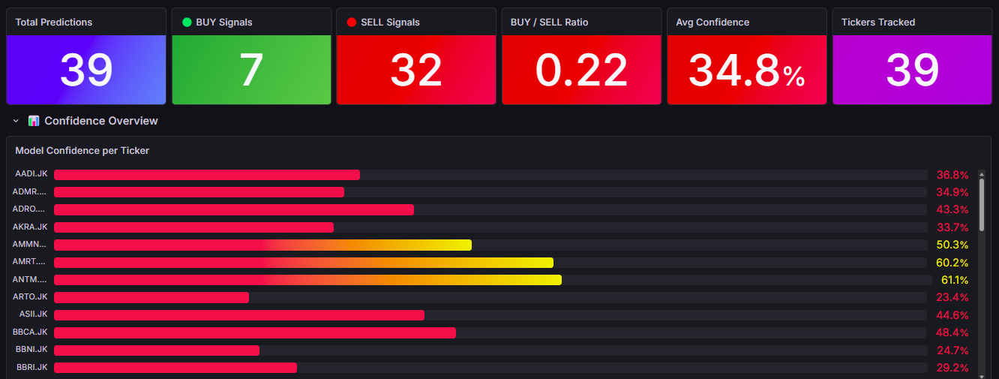
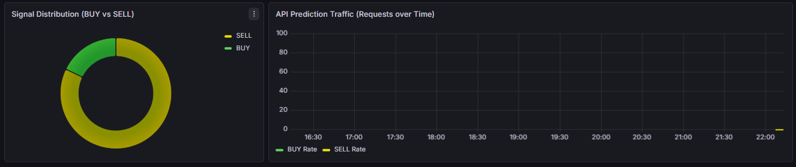

Indonesian Stock MLOps Pipeline
End-to-end ML pipeline with experiment tracking, monitoring, and automated retraining for Indonesian stock prediction.
The Problem
The Indonesia Stock Exchange (IDX) presents unique challenges for ML models: high volatility, market-microstructure effects, and regulatory calendar impacts that Western-trained models don't account for. A client needed a prediction pipeline generating BUY/SELL signals for 45 IDXBLUE blue-chip stocks. Accuracy was the baseline; the signals also had to be monitorable, retrainable, and auditable.
The key requirement: the pipeline had to run without manual intervention, covering automated data ingestion, training, evaluation, and deployment with full observability. The public repo is a simplified demonstration of the architecture; the production version served live trading decisions under NDA.
The Architecture
Why It's Hard
- Financial time series are non-stationary: Market regimes change. A model that worked last quarter may fail this quarter. The pipeline needed drift detection and automated retraining triggers.
- MLOps on a budget: No AWS SageMaker, no Databricks. Everything runs on a modest VPS with Docker Compose, where MLflow, Grafana, and the model serving infrastructure had to coexist efficiently.
- Feature engineering at scale: Indonesian market data required custom features: sector rotation signals, foreign vs domestic flow ratios, and Islamic calendar adjustments (Ramadan effects on trading volume).
- Auditability: Financial predictions need to be explainable. Every model version, every feature set, every prediction had to be traceable.
Technical Stack
- Scikit-learn: primary ML framework for stock movement prediction models
- MLflow: experiment tracking, model registry, and deployment management
- Grafana: real-time dashboards for prediction accuracy, data drift, feature distributions, and system health
- Docker + Docker Compose: containerized pipeline with reproducible environments
- Pandas: data ingestion, feature engineering, and preprocessing
- Custom drift detection: statistical tests on feature distributions triggering automated retrain workflows
- FastAPI: lightweight prediction serving
Inside the System
Two views from the Grafana deployment. The signal distribution shows how the pipeline's BUY and SELL calls divide up, and the confidence panel breaks model conviction down per ticker so a weak signal is visible before it reaches anyone downstream.


What I'd Do Differently
- Add a feature store. Feast or a simple Redis-based store would have prevented feature inconsistencies between training and serving.
- Use DVC for data versioning. Tracking which dataset produced which model is critical. Git alone isn't enough.
- Implement shadow deployment. Running new models in shadow mode before promoting them would reduce deployment risk.
- Explore gradient boosting. XGBoost or LightGBM could potentially capture non-linear patterns better than the Scikit-learn models, and both are worth benchmarking in a future iteration.
Key Takeaways
MLOps isn't about fancy tools. It's about reproducibility and trust. When your predictions affect financial decisions, you need to know exactly which model version made which prediction, with which data, and why. That's the bar.
I'm open to full-time, contract, and freelance work.